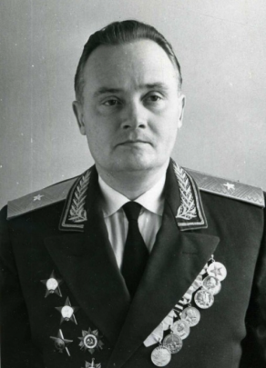
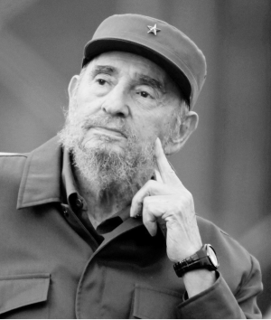
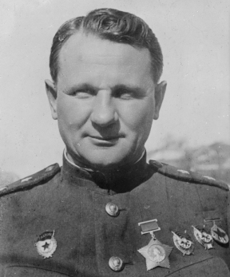
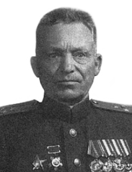
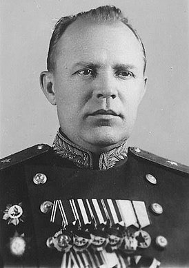

О незаурядном преподавательском даре Момыш-улы
вспоминает один из слушателей академии И. М. Голушко в своих воспоминаниях «Солдаты тыла»:

И. М. Голушко
Говоря о положительном влиянии лучших преподавателей на нашу аудиторию, не могу прежде всего не вспомнить
о человеке в наших глазах полулегендарном. Речь идет о полковнике Баурджане Момыш-Улы, который читал
курс общей тактики. Многие из нас узнали о нём ещё по книге Александра Бека «Волоколамское шоссе», в
которой Баурджан выведен в роли центрального героя. Наш интерес к этому человеку ещё более возрос, когда
стало известно, что полковник и сам талантливо пишет на темы войны и уже опубликовал в местном издательстве
несколько рассказов и небольших повестей. Мы их, разумеется, тотчас достали, прочли и признали эту «пробу пера»
весьма многообещающей. Мы всегда с интересом ожидали лекций Момыш-улы. Любой материал он излагал доходчиво, чаще
прибегая к схемам, нежели к конспектам, и подкрепляя каждый тезис поучительными примерами из боевого опыта.
Он умел как-то попросту, без различия в чинах, и в то же время требовательно относиться ко всем слушателям.
Разбирая сложные вопросы тактики, исподволь приучал нас к самостоятельности мышления.
С этой целью мог прервать свой рассказ в самом неожиданном месте, чтобы спросить: «А что думает на этот счет капитан Иванов?»
или «А как бы поступил в этой ситуации товарищ Петров?». И слушатели постоянно были готовы доложить своё решение, обосновать свой вариант действий. Постоянный контакт преподавателя с аудиторией заставлял творчески осмысливать весь изучаемый материал. В нашей академии полковника Момыш-улы любили и слушатели и преподаватели за простоту и прямоту суждений, за честность и веселый нрав. Он умел увлекательно рассказывать о тяжёлых боях, которые вела их Панфиловская дивизия, о подвигах однополчан. Самыми интересными были его воспоминания о битве под Москвой, в которой Баурджан принимал активное участие, будучи комбатом, и о боях на исходе войны, когда он был уже командиром дивизии.
В 1963 году было опубликовано интервью с Фиделем Кастро. На вопрос:
«Кого Вы могли бы назвать героем Второй мировой войны?» Кастро ответил: Героя книги
Александра Бека «Волоколамское шоссе» — казаха Момыш-Улы.
Кастро ответил: Героя книги Александра Бека «Волоколамское шоссе» — казаха Момыш-Улы.
Однажды Момышулы узнал, как высоко оценили его подвиги во время войны Фидель Кастро и Че Гевара и сразу же отправил им приглашение в приехать гости.
Кубинские гости, во время визита в СССР сразу заявили, что хотели бы встретиться с легендарным «диким» казахом. Но Бауыржан Момыш-улы
побывал с ответным визитом и на Острове Свободы в 1963 году. Встречу казахской легенды на Кубе можно было сравнить разве что с празднованиями в
честь Юрия Гагарина. Кубинцы рассчитывали, что их кумир в течение месяца будет проводить лекции по ведению войны, но Момыш-улы отказался,
сказав что справится в 10 дней. Герой вёл в военном училище курсы «выход из окружения без потерь» и «ведение ночных боёв в наступлении».

Фидель Кастро
Генерал-полковник И. М. Чистяков в своей книге «Служим Отчизне» писал о Бауыржане Момышулы:

Командира 1073-го стрелкового полка майора Бауыржана Момышулы я знал ещё до войны по совместной службе на Дальнем Востоке.
Это был молодой командир, казах по национальности, с крутым и упрямым характером и красивой внешностью.
Я знал, что его очень ценил И. В. Панфилов за особую отвагу и смекалку. Под Москвой его батальон, находясь в окружении, несколько дней не имея
связи с полком, дрался с превосходящими силами противника. В жестоких боях гвардейцы в течение двух суток уничтожили 400 фашистов,
задержали их наступление по Волоколамскому шоссе и затем, совершив манёвр по лесу, разорвали кольцо окружения и вышли к своему полку. После этого боя Панфилов
держал при себе батальон Момышулы как резерв, посылая его в бой в самых тяжёлых случаях. Нравилось мне у Момышулы ещё одно качество — правдивость. Как бы тяжело ему ни было,
я знал, что он всегда скажет правду, того же он требовал от своих подчинённых. И. М. Чистяков
Письмо, составленное командиром 8-й гвардейской стрелковой дивизии гвардии
полковником И. И. Серебряковым и начальником отделения кадров 8-й дивизии гвардии майором Кондратовым:
"В ПРЕЗИДИУМ ВЕРХОВНОГО СОВЕТА СОЮЗА ССР Копия: ВЕРХОВНОМУ СОВЕТУ КАЗАХСКОЙ ССР (для сведения)
Считаю своим долгом доложить: В июле месяце 1941 года я прибыл в г. Алма-Ату на должность начальника штаба
316-й стрелковой дивизии, которой командовал генерал-майор Панфилов. Дивизия впоследствии переименована в 8-ю
гвардейскую стрелковую дивизию и за подмосковные бои награждена орденом Красного Знамени и орденом Ленина.
Я продолжительное время был начальником штаба этой дивизии и в период наступательных боев, с марта 1942 года
по октябрь 1942 года, командовал этой дивизией. В своё время ни генералу Панфилову, ни генералу Чистякову, в то
время командовавшим дивизией, и мне, как их первому заместителю и впоследствии командиру дивизии, по ряду обстоятельств
не удалось отметить заслуженные подвиги, совершенные неоднократно в боях одним из офицеров-ветеранов Панфиловской дивизии,

Серебряков, Иван Иванович
выросшего в боях от старшего лейтенанта до полковника, ныне здравствующего Баурджана Момыш-Улы.
Долг справедливости требует от меня, изложив в этом письме совершенные им подвиги, обратиться к Вам с просьбой.
Баурджан Момыш-Улы в звании старшего лейтенанта был назначен командиром батальона 19-го гвардейского стрелкового полка.
В должности командира батальона он провел 27 боев в условиях маневренной обороны под Москвой в 1941 году. Отрываясь 5 раз от дивизии
в тылу противника, с целью выполнения специальных задач, поставленных генерал-майором Панфиловым в условиях окружения,
он умело выводил свой батальон и приданные ему подразделения из окружения, сохранил живую силу и технику. 1. 26.10.1941 г.
товарищ Момыш-Улы, будучи командиром батальона, привел в г. Волоколамск после упорных боев на правом рубеже из окружения
690 человек, 18 артупряжек, 30 повозок, организованно ведя бой по выводу батальона из окружения на промежуточных рубежах на протяжении
35 км. В этих боях особое значение имели для дивизии бои, данные им в районе Сафатово, Миловани, Рюховское и Спас-Рюховское, когда батальон врезался в хвост
немецких колонн, наступающих на Волоколамск, что способствовало выигрышу времени и отрыву основной силы дивизии от
преследования противника и задержке на 2 суток главных сил противника на Волоколамском направлении. В боях за город
Волоколамск в период с 27.10.41 г. по 15.11.41 г. батальон Момыш-Улы отличался неоднократно своими действиями по разгрому
немецких захватчиков. За все эти подвиги в период с 16.10.1941 г. по 15.11.1941 г. генерал Панфилов 7.11.41 г. представил старшего лейтенанта

Анатолий Николаевич Кондратов
Момыш-Улы к правительственной награде — ордену Ленина. Судьба наградного
листа до сих пор неизвестна, и заслуженные подвиги товарища Момыш-Улы остались неотмеченными.
2. С 16.11.41 г. по 20.11.1941 г. батальон под командованием Момыш-Улы ведёт борьбу в условиях окружения
в районе деревни Горюны на Волоколамском шоссе, железнодорожной станции Матренино, перерезав основные пути
движения главных сил противника, наступающих на Москву. В это время части дивизии отходили на следующий
промежуточный рубеж, и действия батальона Момыш-Улы обеспечили отрыв главной силы дивизии от наступающей силы
противника и занятию следующего рубежа. В этих боях батальоном уничтожено до 600 гитлеровцев, 6 танков и захвачены
трофеи: 6 станковых пулеметов, 12 ручных пулеметов, 2 орудия, 8 радиостанций, 2 штабных автомашины с документами, в
числе которых много «сов. секретных документов», расшифровывающих главные силы Волоколамском группировки противника.
20.11.1941 г. батальон, прорвав кольцо, ведя неоднократные бои в тылу противника, к 23.11.41 г. присоединился к своему
полку. Привел с собой 300 человек, 2 орудия, 16 повозок, 4 станковых пулемета и снова влился в дивизию как боеспособное подразделение. 3. В районе д. Лопастино — Десятидворка Момыш-Улы 25.11.41 г. с одним ПТО, двумя минометами, двумя станковыми пулеметами и полувзводом бойцов совершил ночной налёт на расположение противника, где уничтожено было до 200 немецких солдат. Этот подвиг также оставался неотмеченным. 4. С 26.11.41 г. по 7.12.41 г. старший лейтенант Момыш-Улы командовал 1073-м стрелковым полком, ныне 19-й гвардейский стрелковый полк. а) В районе д. Соколове с 26.11.41 г. по 30.11.1941 г. полк Момыш-Улы четверо суток вел упорные бои, четырежды отбивал атаки противника, несмотря на интенсивную бомбежку авиации; б) В боях за станцию и населённый пункт Крюково полк находился в центре боевого порядка дивизии и вел упорные бои с 31.11.41 по 7.12.1941 г. 5.12.1941 г. в этих боях тов. Момыш-Улы получил ранение и, зная, что дальше отступать некуда и что в полку осталось небольшое количество людей, отказался уйти с поля боя и продолжал руководить им до 7.12.1941 г. В крюковских боях уничтожено до полка пехоты, 18 танков и много другой техники, и совместно с другими частями дивизии 8.12.1941 г. полк пошёл в контрнаступление. Этот героический поступок молодого офицера также остался неотмеченным; в) В зимнее наступление 1942 года тов. Момыш-Улы в звании капитана с полутора батальонами стрелков смелым ночным налётом разгромил резервы дивизии СС «Мертвая голова», уничтожив 1200 гитлеровцев и захватив узел шести дорог с населёнными пунктами: Бородино, Барклавица, Трошково, Трохово, Конюшено, Вашково, и тем самым 6.2.1942 г. обеспечил выполнение задачи дивизии, лишив противника путей и возможностей подбросить резервы и боепитание Соколовской группе, которая упорно обороняла д. Соколово в течение трёх суток; г) 8.2.1942 г., очутившись со случайно оторвавшимся от полка взводом разведчиков в районе Бол. Шелудьково, наткнулся на отходящие части противника: колонну до 600 человек и 8 танков. Внезапным огневым налётом взвод уничтожил до 200 немецких солдат и захватил важные оперативные документы. 5. С 27.2.1942 по 13.5.1942 г., занимая оборону в невыгодных условиях, в лесисто-болотистой местности на широком фронте, в районе деревень Дубровка, Кобляки, находясь в огневом мешке 1-го, 4-го, 5-го авианаземных немецких полков, полк Момыш-Улы отбивал до сотни атак, не уступив ни одного метра земли противнику, нанося ему большие потери. Учитывая все перечисленные выше боевые заслуги Момыш-Улы, мною в августе месяце 1942 года был оформлен наградной лист на звание Героя Советского Союза, судьба которого до сего времени неизвестна. Излагая далеко не полно подвиги Момыш-Улы, считаю своим долгом донести Вам и прошу, на основании вышеизложенного, согласно статутов орденов Союза ССР, отметить товарища Момыш-Улы в пределах, которые считаете возможными Вы, ибо справедливость этого от меня требует. Гвардии полковник Момыш-Улы 1910 года рождения, по национальности казах, член ВКП(б) с 1942 года, участник Отечественной войны с сентября 1941 года. В Красной Армии с 1936 года, ранен тяжело 5.12.1941 г. в районе Крюково. Местожительство: г. Москва, улица Кропоткина, 19, Академия Генерального Штаба Красной Армии имени Ворошилова. Бывший командир 8-й гвардейской стрелковой дивизии гвардии полковник Серебряков Начальник отделения кадров 8-й дивизии гвардии майор Кондратов.